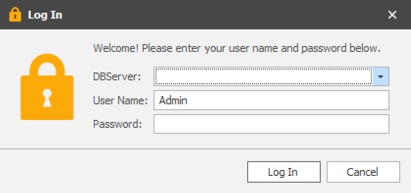
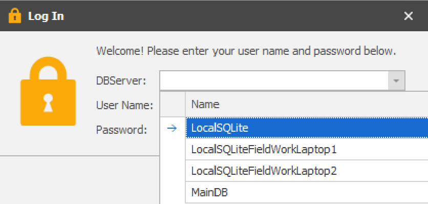

Choose database at logon screen
By default, both web.config (EarthCape Web Client) and EarthCape.Win.exe.config (EarthCape Win Client) require a connection string as described in the installation topic.
In situations where several databases are managed, it is possible to provided a drop down selector with a list of database names and their respective connection string specified in the config.
In order to enable this mode, 2 steps are required:
First, enable "ChooseDatabaseAtLogon" mode by turning the corresponding option on in Model.xafml file in the root folder.
<Application>
...
<Options ChooseDatabaseAtLogon="True"/>
...
Second, add "LogonDBServerXXXX" entries to the config where XXXX is a label that will appear in the drop down.
For example:
<connectionStrings>
<add name="ConnectionString" connectionString=""/>
<add name="LogonDBServerLocalSQLite" connectionString="XpoProvider=SQLite;Data Source=c:\ProgramData\EarthCape\EarthCape.db3" />
<add name="LogonDBServerLocalSQLiteFieldWorkLaptop1" connectionString="XpoProvider=SQLite;Data Source=c:\ProgramData\EarthCape\EarthCapeComp1.db3" />
<add name="LogonDBServerLocalSQLiteFieldWorkLaptop2" connectionString="XpoProvider=SQLite;Data Source=c:\ProgramData\EarthCape\EarthCapeComp2.db3" />
<add name="LogonDBServerMainDB" connectionString="Integrated Security=SSPI;Pooling=false;Data Source=.\sqlexpress;Initial Catalog=MainDB"/>
</connectionStrings>
NOTE: make sure you keep one "ConnectionString" entry along side others.
This will add additional DBServer drop down to login form:

where the list is populated from the config:
